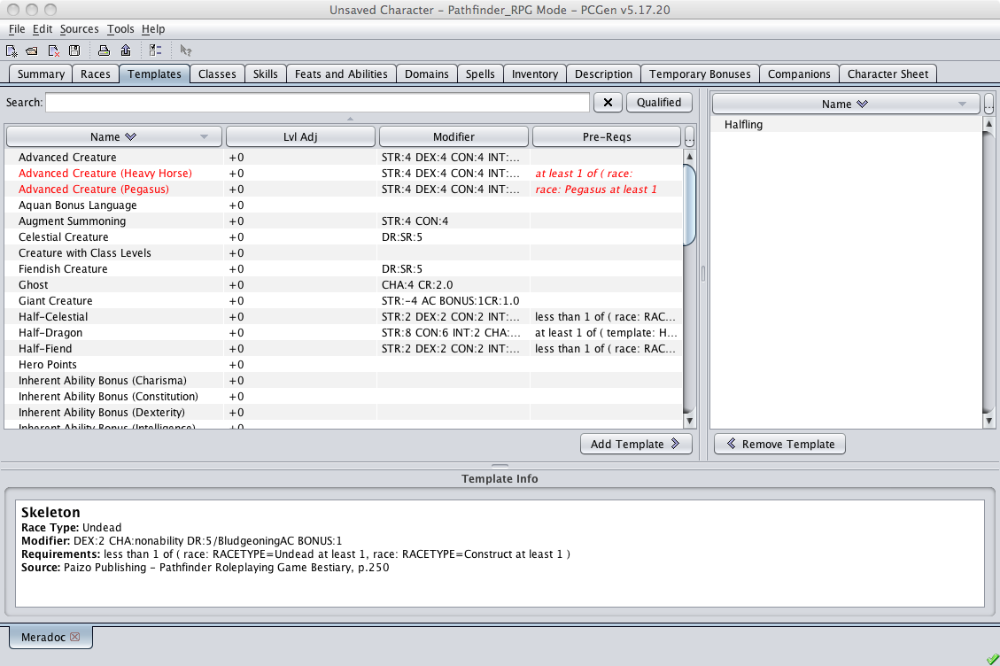

Templates are generally meant to handle "permanent" adjustments and not situational ones. Examples of these are the Advanced Creature template from the RSRD and the Pathfinder core rules.

The left pane displays the full list of templates available from the loaded data sets. Clicking on the Qualified button will remove all templates that have requirements that the current character does not meet. An example of one of these would be a race with an alignment requirement such as Trained Animal which requires, per the Pathfinder Core Rules, that the creature upon which it is applied must be an Animal with an intelligence of less than 3. Finally, you can use the Search field to find the template you are looking for.
The right pane is where templates applied to the character appear, whether newly applied or applied previously. once its been selected.
The lower pane is the Template Info pane. When you select a template in the left or right pane this pane will display the basic information for the selected template.
Selecting a template is a simple process. Find and click on the desired template in the left pane and then click on the Add Template > button. The template appears in the right pane and you are done.
If you wish to remove any applied templates, and assuming that the template is removable, you simply select the template listed in the right pane that is to be removed and click on the < Remove Template button. The template will be removed from the character and from the right pane.